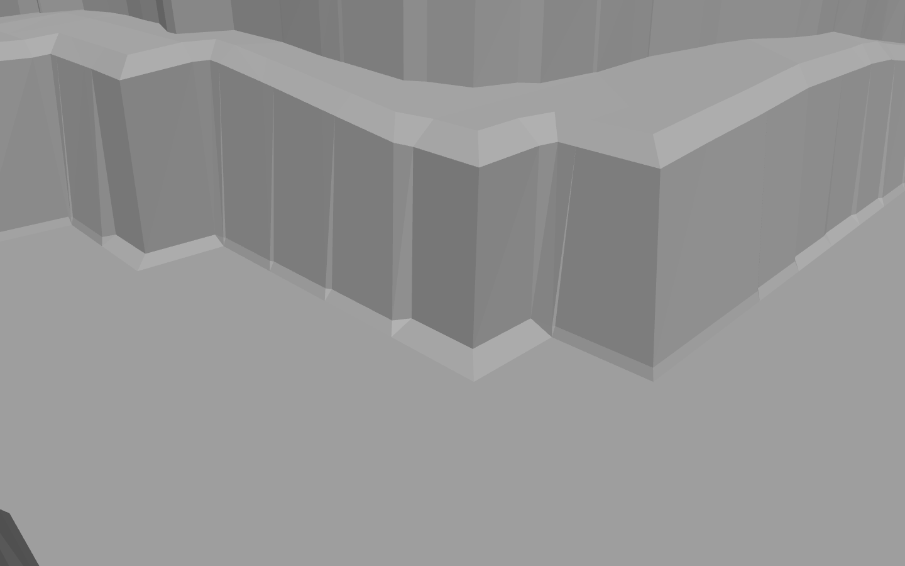
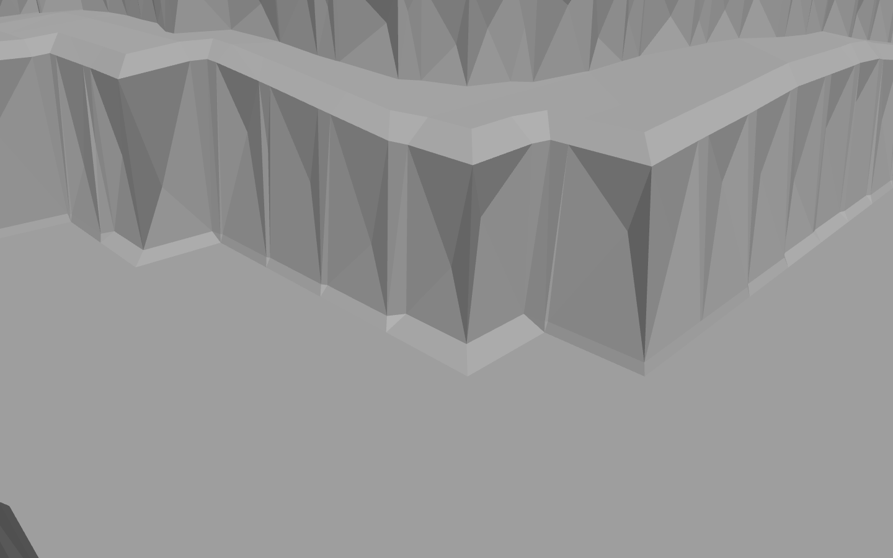
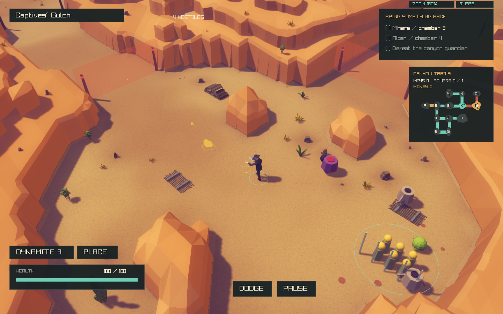

2026-11-02. The broad terrain rewrite was rejected and archived under rejected-source. Active terrain is restored to committed canyon b976baa. This smaller study changes only steep wall interiors, adding an off-centre seeded vertex with shallow relief and four unequal facets. Original wall perimeter vertices, caps, floor, terrace layout and elevations remain fixed.
Neutral grey isolates the geometry. Both images use the same baseline-selected face and diagnostic camera; this close-up does not change the game camera.



Set irregular_facets 0 in assets/visual/canyon.cfg to restore original cliff faces. Other visual settings retain their committed defaults. Seeded decoration placement and support use the unchanged pre-detail surface; visual aiming rays use the rendered faceted surface. No camera, lighting, materials, combat, room graph or collision code changed.
Canyon checks: 12 maps, determinism, collision invariance, support and road/water clearance passed. The direct baseline comparison confirms unchanged floor/cap vertices, elevations and decoration positions. Native asset/render checks: passed, 22,147 placements over five seeds in both themes, including rendered terrain rays. Native build passed. WASM omitted under the standing waiver.
This is a reversible face-detail sample, not a claim of matching the entire target. Original contour and continuous terrace patterns are deliberately retained. Four facets per qualifying wall quad still retain some original segmentation; the amount of surface relief needs visual review. Extra triangles and a retained support mesh add memory/build work; no controlled performance benchmark was run. No commit made.